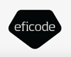
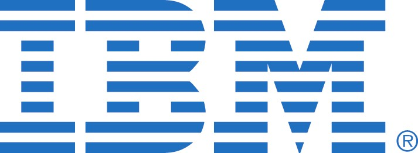

Women, join the Internet playground. one-day, free crash-course to the exciting world of building web applications with Ruby on Rails.
Applying for the event has closed. We'll let you know on September 18th whether you've been chosen.
Rails Girls aims to give tools for girls and women to build their ideas.
You learn designing, prototyping and coding by doing it with help from our coaches.
| 9:00 - 10:00 |
Registration, breakfast and installation festDuring the morning we’ll install Ruby on Rails on your computer. |
|---|---|
| 10:00 - 10:20 |
WelcomeOutline of the day & word from sponsors |
| 10:20 - 10:40 |
Designing your web appBy Maria Kulse |
| 10:40 - 11:00 |
Tryruby.orgLet's get coding! |
| 11:00 - 13:00 |
WORKSHOPJumpstart your first web application |
| 13:00 - 13:45 | Lunch |
| 13.45- 14:00 |
Bentobox - Understanding Web AppsRecap of what we’ve learned and how it all fits together. |
| 14:00 - 14:20 |
Lighting talksBy Elina Arponen and Terence Lee |
| 14:20 - 16:00 |
WORKSHOPExtend your application. |
Where: Aalto Design Factory, Betonimiehenkuja 5, 02150 Espoo. See map
Application Deadline: 16th September 2012
Acceptances informed: 18th September 2012
Rails Girls is co-organized with our awesome partners. From community, to community ♥.
Want to help? We're looking for partners & sponsors! E-mail us at contact (a) railsgirls.com
We are Reaktor. A software house. Our 190 smart and handsome employees shape the company every day. Want to play a part in our story?
Frozen Rails 2012 is a single track, two day Ruby conference, organized by Kisko Labs.
 Eficode is a strong Finnish company in the IT industry, consisting of talented people who are passionate about their work. Our common goal is a satisfied customer.
 IBM has solved its clients’ business needs with technology for 100 years, and in Finland for the last 75 years. During its history, IBM has evolved from a calculator and punch machine manufacturer into a modern service and technology company. One of the key foundations of our business is research and development: IBM is the largest private general research organization in the world. IBM’s revenue in 2011 was USD 106.9 billion, and it has 425 000 employees. For more information, see ibm.com/fi (in Finnish only) and ibm.com .
Dramagame is a new form of interactive storytelling. Each show takes only 45 minutes. But each time it's a different, unique experience. All characters of a Dramagame story are played by real people. Everyone gets a pre-made character with missions to accomplish. Chatting with other player characters is the core gameplay.
How much does the workshop cost? Nothing, it's free! You just need to be excited!
Who is this aimed for? Women of any age with basic knowledge of working with a computer. We’ve had people of all ages taking part. Most of the program is run in english and please bring your laptop.
How do you choose the attendees? We want a diverse group of people who are motivated and curious about learning.
Can men attend? Yes, but you need to be accompanied by an interested lady. Also, girls are given a priority.
 Jukka Jokelainen, coach
@jukkajokelainen
Timo Ruokonen, coach
@timoruokonen
Antti Holvikari, coach
@antti
Krista Kauppinen, organizer
@kristajessica
Yu Shen, coach
@Yu_Shen
Hanne Aho, coach
Hanne's LinkedIn
Nur Sah Ketene, coach
@nursahketene
Terence Lee, coach
@hone02
Kalle Tiihonen, coach
@ktiihonen
Maria Boychenko, organizer
@mariaboychenko
Satu Suuronen, organizer
@satusuuronen
Stefanie Hofemann, organizer
@stefu
Charlotta Liukas, organizer
@charlottaliukas
Markku Rontu, coach
@zorcam
Krister Bäckman,
coach
Lotta Suuronen,
organizer
Jukka Jokelainen, coach
@jukkajokelainen
Timo Ruokonen, coach
@timoruokonen
Antti Holvikari, coach
@antti
Krista Kauppinen, organizer
@kristajessica
Yu Shen, coach
@Yu_Shen
Hanne Aho, coach
Hanne's LinkedIn
Nur Sah Ketene, coach
@nursahketene
Terence Lee, coach
@hone02
Kalle Tiihonen, coach
@ktiihonen
Maria Boychenko, organizer
@mariaboychenko
Satu Suuronen, organizer
@satusuuronen
Stefanie Hofemann, organizer
@stefu
Charlotta Liukas, organizer
@charlottaliukas
Markku Rontu, coach
@zorcam
Krister Bäckman,
coach
Lotta Suuronen,
organizer
Held together with Frozen Rails conference the second Rails Girls Helsinki had altogether 30 participants and over 75 applications. Our keynote speaker Jessica Allen, as well as our badge-making machine proved to be instant hits.

Jessica is a designer and web developer based in San Francisco. Currently working for Engine Yard, she is also into coffee, the 1960's, front-end, punk music, mac accessories, web type, crafts, and comics.
Follow Jessica at @jessicaspacekat and pixelpopdev.com